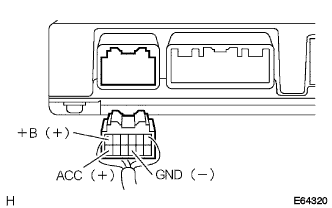
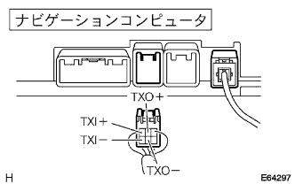
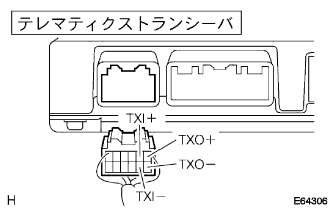

G-Book System AVC-LAN PLUS abnormalities |
reference)reference)reference)| Step 1 | Wire harness or connector inspection (telematic restaurant Seava power supply system) |
|  |
Voltage inspection
Use a SST (Toyota Electrical Tester) to check the voltage between each terminal from the back of the connector with the connector of the vehicle side wire harness diagram separated.(The terminal array isreference)
| Tester connection | Measurement conditions | Reference value |
|---|---|---|
| +B (A6) ← → GND (A9) | Always | 10-14V |
| ACC (A12) ← → GND (A9) | IG Switch ACC | 10-14V |
Conduction inspection
Using a SST (Toyota Electrical Tester), check the conjunction between each terminal from the back of the connector with the connector in the vehicle side wire harness diagram.(The terminal array isreference)
| Tester connection | Measurement conditions | standard |
|---|---|---|
| GND (A9) ← → Body Earth | Always | There is an conductor |
|
| ||||
| OK | |
| Step 2 | Telematic Stunk Seava Inspection |
|  |
Preparation before inspection
Cut the connector in the diagram of the navigation computer.
Conduction inspection
Use SST (Toyota Electrical Tester) to check the conduction of each terminal of the wire harness connector on the navigation computer side.(The terminal array isreference)
| Tester connection | standard |
|---|---|
| TXI+(D3) ← → TXO+(D2) | There is an conductor |
| TXI- (D6) ← → TXO- (D5) | There is an conductor |
Short -circuit inspection
Use SST (Toyota Electrical Tester) to inspect the conjunction between the wire harness connectors on the navigation computer side and between the body earth.(The terminal array isreference)
| Tester connection | standard |
|---|---|
| TXI+(D3) ← → TXO- (D5) | Without conduction |
| TXI- (D6) ← → TXO+(D2) | Without conduction |
| TXI+(D3) ← → Body Earth | Without conduction |
| TXI- (D6) ← → Body Earth | Without conduction |
| TXO+(D2) ← → Body Earth | Without conduction |
| TXO- (D5) ← → Body Earth | Without conduction |
|
| ||||
| NG | |
| Step 3 | Navigation computer inspection |
|  |
Preparation before inspection
Cut the connector in the figure of the telematic restaurant saver.
Conduction inspection
Use SST (Toyota Electrical Tester) to inspect the conduction of each terminal of the wire harness connector on the telematic restaurant sher.(The terminal array isreference)
| Tester connection | standard |
|---|---|
| TXI+(A2) ← → TXO+(A1) | There is an conductor |
| TXI- (A8) ← → TXO- (A7) | There is an conductor |
Short -circuit inspection
Use SST (Toyota Electrical Tester) to inspect the conjunction between the wire harness connectors on the navigation computer side and between the body earth.(The terminal array isreference)
| Tester connection | standard |
|---|---|
| TXI+(A2) ← → TXO- (A7) | Without conduction |
| TXI- (A8) ← → TXO+(A1) | Without conduction |
| TXI+(A2) ← → Body Earth | Without conduction |
| TXI- (A8) ← → Body Earth | Without conduction |
| TXO+(A1) ← → Body Earth | Without conduction |
| TXO- (A7) ← → Body Earth | Without conduction |
|
| ||||
| OK | |
| Step 4 | Telemati Caser Seaba replacement |
| ||
| Step 5 | Navigation computer exchange |
| ||